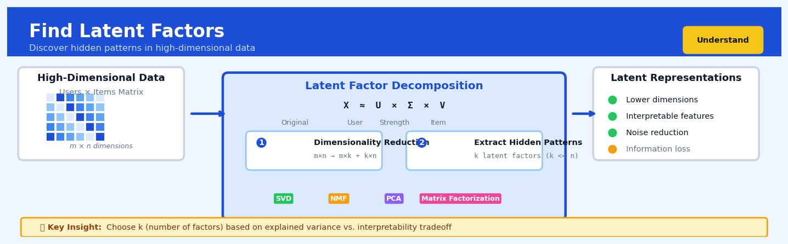

Find Latent Factors#


The biggest mistake I see teams make is treating the number of latent factors as a hyperparameter to optimize purely for reconstruction error. In reality, you need to balance three tensions: model performance, computational cost, and whether stakeholders can actually understand and act on the factors you discover. If your business users can't interpret what factor 47 represents, you've probably extracted too many.
The 60-Second Version#
What it does: Find Latent Factors reduces hundreds of measurements down to a handful of hidden drivers that explain why your data looks the way it does.
When to use it: You have many correlated variables (customer behaviours, survey responses, sensor readings) and need to understand what fundamental patterns are actually driving the variation.
What you get back: A small set of factors—often 3 to 10—each representing a distinct underlying pattern, plus a score showing how much each factor matters to each observation, which you can use for segmentation, visualisation, or further analysis.
Difficulty |
Moderate |
Typical runtime |
Seconds on 100K rows |
What you bring |
A dataset with multiple numeric variables measured on the same observations |
What you get |
A reduced set of factors and transformation rules to project new data |
Heuristix bucket |
Understand — Statistical Analysis & Profiling |
Latent factors are mathematical constructs, not necessarily real-world entities—you must interpret and validate what each factor represents before making business decisions.
Learning Objectives#
After reading this chapter, a business user will be able to:
Identify situations where dozens or hundreds of correlated metrics can be simplified into a handful of underlying drivers, such as customer segmentation from survey responses or portfolio risk assessment from multiple asset correlations.
Interpret factor loadings and component scores to explain which original variables contribute most to each latent factor and translate these patterns into business terms that non-technical stakeholders can act upon.
Decide how many factors to retain by balancing the need for simplicity against information loss, and communicate this trade-off when presenting reduced-dimension dashboards or reports to leadership.
After reading this chapter, a data scientist will be able to:
Implement PCA and Factor Analysis in production code while correctly handling preprocessing requirements (scaling, centering), missing data, and the distinction between correlation-based and covariance-based decompositions.
Select the optimal number of components by applying multiple criteria (scree plots, explained variance thresholds, parallel analysis) and choose between orthogonal and oblique rotations based on whether factors should be interpretable as independent constructs.
Diagnose when latent factor methods fail due to insufficient sample size, lack of correlation structure, or violated assumptions (non-linearity, extreme outliers), and validate results through cross-validation, stability analysis, and domain-expert review of factor interpretability.
Overview#
Find Latent Factors is a dimensionality reduction technique that uncovers hidden structure in high-dimensional data by identifying a smaller set of unobserved variables—called latent factors—that explain the correlations among observed variables. Its core purpose is to transform a large number of correlated measurements into a compact representation that captures the essential patterns in the data while filtering out noise. This family of methods, which includes Principal Component Analysis (PCA), Factor Analysis (FA), and related matrix factorisation techniques, belongs to the broader class of unsupervised learning methods for statistical profiling and data understanding.
When to Use This#
Use this when you have a dataset with many correlated variables and need to understand what underlying constructs drive those correlations—for example, identifying that customer satisfaction, likelihood to recommend, and repeat purchase intention all reflect a single “loyalty” factor.
Use this when you want to reduce dimensionality before building a predictive model, as highly correlated features can cause instability in regression coefficients and inflate variance in predictions.
Use this when visualising high-dimensional data: reducing 50 features to 2–3 latent factors enables meaningful scatter plots and cluster exploration.
Use this when building composite scores from multiple survey items or sensor readings—latent factors provide principled, data-driven weightings rather than arbitrary averages.
Use this when diagnosing multicollinearity in your feature set: if a small number of factors explain most variance, your original features contain substantial redundancy.
Use this when you suspect measurement error in your variables and want to separate the “true signal” (common variance) from noise (unique variance), which is the explicit goal of classical factor analysis.
Do NOT use this when your variables are largely uncorrelated—the technique will return as many factors as variables, providing no simplification.
Do NOT use this when you need interpretable, causal relationships; latent factors are mathematical constructs, not necessarily real-world entities.
Do NOT use this when your data is sparse or binary without appropriate preprocessing—standard PCA assumes continuous, roughly Gaussian data.
Do NOT use this when sample size is small relative to the number of variables; a common heuristic requires at least 5–10 observations per variable for stable factor solutions.
Questions This Answers#
Understanding What’s Really Driving Our Business#
Why are we tracking 47 different customer metrics when only a handful probably matter?
What are the 3–5 underlying factors that actually explain why some stores perform well and others don’t?
Is there a common pattern connecting customers who churn—something deeper than just their last purchase date or support tickets?
We collect hundreds of data points in our manufacturing process, but what’s really causing the quality variations we see?
Can we identify the core themes in thousands of customer reviews without reading every single one?
Are there distinct customer “types” hidden in our data that we should be targeting differently?
Simplifying and Prioritizing Our Efforts#
Which 10 survey questions could we drop from our annual customer satisfaction survey and still get the same insights?
We have 200 features in our recommendation engine—could we get 90% of the accuracy with just 15–20 key factors?
What’s the smallest set of metrics our regional managers need to watch to catch problems early?
Should we be measuring employee engagement with 60 questions, or can we get the same signal from a shorter pulse survey?
Can we reduce our supplier evaluation scorecard from 35 criteria to something more manageable without losing predictive power?
Making Smarter Strategic Decisions#
Are the three “growth opportunities” our consultants identified really distinct strategies, or just variations of the same thing?
Which product attributes actually drive our Net Promoter Score—is it quality, price, service, or something else entirely?
What are the fundamental risk factors we should monitor across our portfolio, cutting through all the noise in our risk reports?
How It Works#
Imagine you’re a movie critic trying to understand why people like different films. You notice that some viewers love action-packed blockbusters while others prefer quiet dramas, and still others gravitate toward anything with romance. Instead of tracking preferences for all 10,000 movies in your database, you realize that most tastes boil down to just a few underlying preferences: how much action someone wants, how much emotion they crave, and how much complexity they enjoy. A person who rates “Die Hard” highly and “The Notebook” poorly is probably high on the action dimension and low on the romance dimension. By discovering these three hidden dimensions, you can describe each person’s entire movie taste with just three numbers instead of 10,000 ratings.
BEFORE: High-dimensional observed data
┌─────────────────────────────────────────┐
│ Person │ Movie1 │ Movie2 │ ... Movie100│
│ A │ 4.5 │ 2.1 │ ... 3.8 │
│ B │ 1.2 │ 4.9 │ ... 4.2 │
│ C │ 3.8 │ 3.1 │ ... 2.9 │
└─────────────────────────────────────────┘
100 columns (noisy, correlated)
↓
Find Latent Factors algorithm
(analyzes patterns)
↓
AFTER: Low-dimensional latent representation
┌──────────────────────────────────────────┐
│ Person │ Action │ Romance │ Complexity │
│ A │ 0.89 │ -0.34 │ 0.12 │
│ B │ -0.72 │ 0.91 │ 0.45 │
│ C │ 0.15 │ 0.22 │ -0.68 │
└──────────────────────────────────────────┘
3 factors (clean, independent themes)
Step 1: Start with correlated measurements. The algorithm begins with your original data table, where each row is an observation and each column is a measured variable. These variables are often correlated—when one goes up, others tend to move in predictable ways. Perhaps height and weight measurements move together, or certain survey questions always get similar answers.
Step 2: Search for patterns of co-variation. The algorithm examines which variables tend to change together. It’s looking for groups of columns that rise and fall in sync. If five different questions all measure aspects of customer satisfaction, they’ll show similar patterns across respondents, hinting at an underlying “satisfaction” factor driving all five.
Step 3: Extract the first hidden factor. The algorithm identifies the single direction in your data that captures the most variation—the axis along which your data points are most spread out. This becomes your first latent factor. It’s a weighted combination of your original variables that explains the biggest chunk of what’s happening in your data.
Step 4: Remove that pattern and repeat. Once the first factor is found, the algorithm subtracts away the variation it explains, leaving behind the residual patterns. It then finds the next strongest pattern in what remains, creating a second factor that’s independent from the first. This continues until you’ve extracted as many factors as you need.
Step 5: Represent each observation compactly. Every row in your original data now gets a score on each latent factor. Instead of storing hundreds of correlated measurements, you store a handful of factor scores that capture the essential information. These scores tell you where each observation sits along the hidden dimensions that really matter.
The key insight: Most high-dimensional data is redundant—the hundreds of variables you observe are really just different noisy expressions of a few underlying forces, and by discovering those forces you can see the true structure hiding beneath the surface complexity.
The Intuition#
Imagine you are a sommelier training apprentices to evaluate wines. You ask each apprentice to rate 50 different characteristics of every wine: acidity, tannin levels, fruitiness, oak notes, colour intensity, and so on. After collecting thousands of ratings, you notice something striking: apprentices who rate a wine high on “cherry aroma” also tend to rate it high on “plum notes” and “berry finish.” These three ratings move together because they are all manifestations of a single underlying quality—fruitiness—that the apprentices perceive but do not directly measure.
This is the essence of latent factor analysis. The 50 observable ratings are indicators of a smaller number of hidden qualities. By mathematically extracting these hidden qualities, you achieve two things. First, you simplify the problem: instead of tracking 50 ratings, you track perhaps 5 or 6 latent factors (fruitiness, tannin structure, acidity profile, oak influence, etc.). Second, you improve reliability: each latent factor aggregates information from multiple noisy measurements, yielding a more stable estimate of the underlying quality than any single rating alone.
The key insight is that correlation implies shared cause. When variables correlate, something common is driving them. Latent factor methods reverse-engineer this common cause from the observed correlations. They decompose the variance in your data into two parts: the common variance explained by the latent factors, and the unique variance specific to each variable (including measurement error). This decomposition is not just a mathematical convenience—it reflects a substantive model of how the data were generated.
The Mathematics#
Problem Setup and Notation#
Let \(\mathbf{X}\) be an \(n \times p\) data matrix where \(n\) is the number of observations and \(p\) is the number of observed variables. We assume the data are centred (column means are zero). The goal is to express each observation as a linear combination of \(k\) latent factors, where \(k \ll p\).
We denote:
\(\mathbf{x}_i \in \mathbb{R}^p\): the \(i\)-th observation (row of \(\mathbf{X}\))
\(\mathbf{f}_i \in \mathbb{R}^k\): the latent factor scores for observation \(i\)
\(\mathbf{\Lambda} \in \mathbb{R}^{p \times k}\): the factor loading matrix
\(\mathbf{\epsilon}_i \in \mathbb{R}^p\): the unique (idiosyncratic) errors for observation \(i\)
The Factor Model#
The classical factor analysis model assumes:
with the following assumptions:
\(\mathbb{E}[\mathbf{f}_i] = \mathbf{0}\) and \(\text{Cov}(\mathbf{f}_i) = \mathbf{I}_k\) (factors are standardised and orthogonal)
\(\mathbb{E}[\mathbf{\epsilon}_i] = \mathbf{0}\) and \(\text{Cov}(\mathbf{\epsilon}_i) = \mathbf{\Psi}\), where \(\mathbf{\Psi}\) is diagonal
\(\text{Cov}(\mathbf{f}_i, \mathbf{\epsilon}_i) = \mathbf{0}\) (factors and errors are uncorrelated)
Under these assumptions, the covariance matrix of the observed variables decomposes as:
This is the fundamental equation of factor analysis. The term \(\mathbf{\Lambda}\mathbf{\Lambda}^\top\) represents the common variance (variance explained by shared factors), while \(\mathbf{\Psi}\) represents the unique variance (variable-specific variance plus measurement error).
Principal Component Analysis as a Special Case#
PCA can be viewed as a limiting case where \(\mathbf{\Psi} = \sigma^2 \mathbf{I}\) (equal unique variances) or \(\mathbf{\Psi} = \mathbf{0}\) (no unique variance). PCA seeks the factor loading matrix \(\mathbf{\Lambda}\) that minimises the reconstruction error:
where \(\|\cdot\|_F\) denotes the Frobenius norm and \(\mathbf{F}\) is the \(n \times k\) matrix of factor scores.
The solution is given by the eigendecomposition of the sample covariance matrix \(\mathbf{S} = \frac{1}{n-1}\mathbf{X}^\top\mathbf{X}\):
where \(\mathbf{V}\) contains the eigenvectors and \(\mathbf{D} = \text{diag}(\lambda_1, \ldots, \lambda_p)\) contains the eigenvalues in descending order. The optimal \(k\)-factor solution uses the first \(k\) eigenvectors:
and the factor scores are:
Proportion of Variance Explained#
The total variance in the data equals the sum of eigenvalues: \(\sum_{j=1}^{p} \lambda_j = \text{tr}(\mathbf{S})\). The proportion of variance explained by the first \(k\) factors is:
Maximum Likelihood Factor Analysis#
When unique variances are heterogeneous, maximum likelihood estimation finds \(\mathbf{\Lambda}\) and \(\mathbf{\Psi}\) that maximise:
where \(\mathbf{\Sigma} = \mathbf{\Lambda}\mathbf{\Lambda}^\top + \mathbf{\Psi}\).
This is typically solved via the EM algorithm or gradient-based optimisation. The likelihood function is invariant to orthogonal rotations of \(\mathbf{\Lambda}\), leading to the rotational indeterminacy problem.
Factor Rotation#
The loading matrix \(\mathbf{\Lambda}\) is identified only up to an orthogonal rotation: if \(\mathbf{R}\) is a \(k \times k\) orthogonal matrix, then \(\mathbf{\Lambda}^* = \mathbf{\Lambda}\mathbf{R}\) produces the same covariance structure. To obtain interpretable loadings, we apply rotation criteria.
Varimax rotation maximises the variance of squared loadings within each factor:
This pushes loadings toward 0 or ±1, making each factor load heavily on a few variables.
Determining the Number of Factors#
Several criteria exist:
Kaiser criterion: Retain factors with eigenvalues \(\lambda_j > 1\)
Scree test: Plot eigenvalues and look for an “elbow”
Parallel analysis: Retain factors with eigenvalues exceeding those from random data
Cumulative variance threshold: Retain factors until PVE exceeds a threshold (e.g., 80%)
Edge Cases and Degenerate Conditions#
Heywood cases: When ML estimation produces \(\psi_{jj} \leq 0\), the solution is inadmissible. This often indicates model misspecification or insufficient sample size.
Rank deficiency: When \(n < p\), the sample covariance matrix is singular. Use regularisation or SVD-based approaches.
Near-zero eigenvalues: Indicate perfect collinearity among variables; consider removing redundant variables.
Understanding the Mathematics#
Understanding the Mathematics#
The Data Matrix Decomposition#
The equation:
Read it aloud:
“The observed data matrix equals the latent factor scores multiplied by the factor loadings (transposed), plus error.”
What each symbol means:
X: The original data matrix containing all your measurements (each row is an observation, each column is a variable you measured)
Z: The latent factor scores—the hidden variables we’re trying to discover
W: The factor loadings—weights showing how much each latent factor contributes to each observed variable
W^T: The transpose of W (rows become columns)
E: The error or noise that our factors don’t explain
A concrete numerical example:
Imagine you’re analyzing customer behavior across three metrics: app usage minutes, customer support calls, and purchases. You have 100 customers but believe two hidden factors drive everything: “engagement” and “satisfaction.”
For customer 1: engagement score = 0.8, satisfaction score = 0.6. The loadings tell you app usage = 2.5×engagement + 0.3×satisfaction. So predicted app usage = 2.5(0.8) + 0.3(0.6) = 2.0 + 0.18 = 2.18 hours, plus some small error term of maybe 0.12 hours, giving observed value of 2.3 hours.
Why this equation matters:
This decomposition lets us replace dozens or hundreds of correlated measurements with a handful of meaningful factors, making patterns visible that were hidden in the noise.
The Covariance Matrix#
The equation:
Read it aloud:
“The covariance matrix of the observed data equals the loadings multiplied by their transpose, plus a diagonal matrix of unique variances.”
What each symbol means:
Σ: The covariance matrix showing how all pairs of observed variables co-vary
W: The factor loadings matrix
Ψ: A diagonal matrix containing the unique variance for each variable (the part not explained by common factors)
A concrete numerical example:
Suppose two survey questions have variances of 4.0 and 9.0, and they share one common factor with loadings 1.5 and 2.0. Their covariance from the shared factor = 1.5 × 2.0 = 3.0. If question 1’s unique variance is 1.75 and question 2’s is 5.0, then the total variance for question 1 = (1.5)² + 1.75 = 2.25 + 1.75 = 4.0, which matches what we observe.
Why this equation matters:
This shows how latent factors generate the correlation structure we see in our data—proving our factor model can actually reproduce the relationships we observe.
The Principal Component#
The equation:
Read it aloud:
“The first principal component is the unit-length vector that maximizes the variance of the data when projected onto it.”
What each symbol means:
w₁: The weight vector defining the first principal component direction
arg max: “The value that maximizes” (we’re searching for the best w)
||w||=1: Constraint that w has length 1 (prevents trivial solution of infinite weights)
Var(Xw): The variance of the data after transforming it by weights w
w^T Σ w: A mathematical formula for that same variance using the covariance matrix
A concrete numerical example:
You’re analyzing products with two features: price (average \(50, high variance) and rating (average 4.2 stars, low variance). PCA finds the direction that captures maximum variation. It might give weights of w = [0.95, 0.31]—meaning the first component is mostly about price differences. For a product priced at \)80 with 4.5 stars, its first component score = 0.95(80) + 0.31(4.5) = 76.0 + 1.4 = 77.4.
Why this equation matters:
By finding the direction of maximum variance first, we ensure our first latent factor captures the strongest signal in the data before moving to subtler patterns.
The Big Picture#
The mathematics of latent factors solves a fundamental challenge: how do we systematically compress high-dimensional data while preserving its essential structure? These equations work together like a compression algorithm—the decomposition equation shows what we’re trying to achieve (expressing complex data through simpler hidden factors), while the variance maximization tells us how to find those factors optimally. We use linear algebra rather than simpler methods because it gives us orthogonal factors that are mathematically independent and computationally tractable. At its heart, the math is asking: “What smaller set of imaginary variables, if they existed, would best explain why our real measurements correlate the way they do?”
Python Implementation#
import numpy as np
import pandas as pd
from sklearn.decomposition import PCA, FactorAnalysis
from sklearn.preprocessing import StandardScaler
from sklearn.datasets import load_iris
import matplotlib.pyplot as plt
# =============================================================================
# Example 1: Principal Component Analysis on Iris Dataset
# =============================================================================
# Load and prepare data
iris = load_iris()
X = iris.data
feature_names = iris.feature_names
# Standardise features (essential for PCA when variables have different scales)
scaler = StandardScaler()
X_scaled = scaler.fit_transform(X)
# Fit PCA with all components to examine variance explained
pca_full = PCA()
pca_full.fit(X_scaled)
# Display variance explained by each component
print("=== PCA: Variance Explained ===")
for i, (var, cum_var) in enumerate(zip(
pca_full.explained_variance_ratio_,
np.cumsum(pca_full.explained_variance_ratio_)
)):
print(f"PC{i+1}: {var:.4f} (cumulative: {cum_var:.4f})")
# Fit PCA with 2 components for visualisation
pca = PCA(n_components=2)
X_pca = pca.fit_transform(X_scaled)
# Display factor loadings (correlations between original variables and components)
print("\n=== PCA: Factor Loadings ===")
loadings = pd.DataFrame(
pca.components_.T,
index=feature_names,
columns=['PC1', 'PC2']
)
print(loadings.round(3))
# Interpretation: PC1 loads heavily on petal length and width (flower size)
# PC2 contrasts sepal width against other measurements
# =============================================================================
# Example 2: Factor Analysis with Rotation
# =============================================================================
# Generate synthetic data with known factor structure
np.random.seed(42)
n_samples = 500
# True latent factors (2 factors)
F = np.random.randn(n_samples, 2)
# True loading matrix (6 variables, 2 factors)
# Variables 1-3 load on factor 1, variables 4-6 load on factor 2
Lambda_true = np.array([
[0.9, 0.1],
[0.8, 0.2],
[0.85, 0.15],
[0.1, 0.9],
[0.2, 0.8],
[0.15, 0.85]
])
# Unique variances
psi = np.array([0.2, 0.3, 0.25, 0.2, 0.25, 0.3])
# Generate observed data: X = F @ Lambda.T + epsilon
epsilon = np.random.randn(n_samples, 6) * np.sqrt(psi)
X_synthetic = F @ Lambda_true.T + epsilon
# Fit Factor Analysis
fa = FactorAnalysis(n_components=2, rotation='varimax', random_state=42)
fa.fit(X_synthetic)
print("\n=== Factor Analysis: Estimated Loadings (with Varimax Rotation) ===")
loadings_fa = pd.DataFrame(
fa.components_.T,
index=[f'Var{i+1}' for i in range(6)],
columns=['Factor1', 'Factor2']
)
print(loadings_fa.round(3))
# Display estimated unique variances (noise variances)
print("\n=== Factor Analysis: Estimated Unique Variances ===")
print(f"Estimated: {fa.noise_variance_.round(3)}")
print(f"True: {psi}")
# Compute factor scores for new data
factor_scores = fa.transform(X_synthetic)
print(f"\nFactor scores shape: {factor_scores.shape}") # (500, 2)
# =============================================================================
# Example 3: Choosing the Number of Factors via Scree Plot
# =============================================================================
# Fit PCA with all components
pca_all = PCA()
pca_all.fit(X_synthetic)
# Create scree plot
fig, axes = plt.subplots(1, 2, figsize=(12, 4))
# Eigenvalue plot
axes[0].plot(range(1, 7), pca_all.explained_variance_, 'bo-', markersize=8)
axes[0].axhline(y=1, color='r', linestyle='--', label='Kaiser criterion')
axes[0].set_xlabel('Component')
axes[0].set_ylabel('Eigenvalue')
axes[0].set_title('Scree Plot')
axes[0].legend()
# Cumulative variance plot
axes[1].plot(range(1, 7), np.cumsum(pca_all.explained_variance_ratio_), 'go-', markersize=8)
axes[1].axhline(y=0.8, color='r', linestyle='--', label='80% threshold')
axes[1].set_xlabel('Number of Components')
axes[1].set_ylabel('Cumulative Variance Explained')
axes[1].set_title('Cumulative Variance Explained')
axes[1].legend()
plt.tight_layout()
plt.savefig('scree_plot.png', dpi=150)
plt.close()
print("\nScree plot saved to 'scree_plot.png'
## Visualisations


## Using This in Heuristix
### What Data You'll Need
The Find Latent Factors node expects **numeric data** in a table where each row represents an observation and each column represents a variable you want to analyze. Think customer metrics, sensor readings, survey responses, or product features—anything with multiple correlated measurements.
**Required:** At least 3-4 numeric columns (more is better—latent factor methods shine with dozens or hundreds of variables). The node will automatically detect and use all numeric columns unless you specify otherwise.
**Example input:**
| customer_id | purchase_freq | avg_order_value | email_opens | site_visits | support_tickets |
|-------------|---------------|-----------------|-------------|-------------|-----------------|
| C001 | 12 | 85.50 | 8 | 24 | 1 |
| C002 | 3 | 120.00 | 2 | 5 | 0 |
### Configuration Parameters
| Parameter | What It Controls | Default | When to Change It |
|-----------|-----------------|---------|-------------------|
| **Method** | Algorithm to use: PCA, Factor Analysis, or NMF | PCA | Use FA when you believe measurement error exists; NMF when all values are non-negative and you want interpretable parts-based components |
| **Number of Factors** | How many latent dimensions to extract | Auto (explained variance) | Set manually if you have a specific dimensionality target—e.g., reducing 50 features to exactly 5 for downstream modeling |
| **Variance Threshold** | Minimum % of total variance to retain (when auto) | 85% | Lower to 70-75% for aggressive compression; raise to 90-95% when preserving information is critical |
| **Standardize Inputs** | Whether to scale variables to mean=0, std=1 | On | Turn off only if your variables are already on the same scale and that scale is meaningful |
| **Rotation** | For Factor Analysis: varimax, promax, or none | varimax | Use promax when factors might be correlated; none when you want raw mathematical factors |
| **Include Columns** | Which columns to analyze | All numeric | Specify if you want to exclude IDs, dates, or target variables |
### What You'll Get Back
**New Columns Added:**
- `factor_1`, `factor_2`, ... `factor_n`: The factor scores for each observation—these are your new compressed features
- `reconstruction_error`: How well the factors recreate the original data for each row (lower is better)
**Metrics Panel:**
- Explained variance by factor (bar chart showing what % each factor captures)
- Cumulative variance plot (helps you see the elbow where adding factors gives diminishing returns)
- Total variance retained (headline number—aim for 80%+)
**Visualizations:**
- **Factor loadings heatmap**: Shows which original variables contribute most to each factor—this is where interpretation happens
- **Scree plot**: Classic elbow diagram for choosing the right number of factors
- **Biplot** (for PCA): Observations and variables plotted together in the first two factor dimensions
### Connecting Downstream
**Most common next steps:**
1. **→ Train Model**: Use the factor scores as features—now you're modeling with 5-10 uncorrelated factors instead of 100 noisy variables
2. **→ Find Clusters**: Cluster in the low-dimensional factor space for more robust segments
3. **→ Visualize**: Feed factor scores to scatter plots or UMAP nodes for visual exploration
4. **→ Filter/Score**: Keep only observations with low reconstruction error (high-quality data points)
### Quick Start: Customer Behavior Compression
1. Connect your customer metrics table (purchases, engagement, demographics—10+ columns)
2. Leave Method as **PCA** and Variance Threshold at **85%**
3. Ensure **Standardize Inputs** is On (critical when mixing percentages, counts, and dollar amounts)
4. Run the node and check the **scree plot**—look for where it flattens
5. Review the **loadings heatmap**: Factor 1 might be "engagement," Factor 2 might be "spending power"—name them based on what loads heavily
6. Connect to Train Model, using the new factor columns as your feature set
### Practical Tips from the Field
**Tip 1:** The loadings heatmap is your interpretation key. If a factor has high loadings (>0.6) on visit frequency, email clicks, and app usage, you're looking at an "engagement" dimension—label it accordingly in your documentation.
**Tip 2:** Watch for factors with just one high loading. They often represent unique variance in a single variable (like "number of returns")—consider whether you need them or can drop them.
**Tip 3:** If downstream models aren't improving, you may have set the variance threshold too low. Try retaining 90% instead of 80%—that extra 10% sometimes contains signal, not just noise.
**Tip 4:** Reconstruction error helps spot anomalies. Rows with high error don't fit the common patterns—they might be data quality issues or genuinely unusual cases worth investigating.
**Tip 5:** Don't rotate PCA results (rotation only applies to Factor Analysis). If you accidentally select a rotation method with PCA, the platform will warn you.
## Config Recipes
### Recipe 1: Quick Exploration
**When to use:** Initial data inspection when you need to visualize high-dimensional data in minutes and decide if deeper analysis is warranted.
**Settings:**
| Parameter | Value | Why |
|-----------|-------|-----|
| `method` | `PCA` | Fastest computation, no iterative fitting |
| `n_components` | `2` | Enables scatter plot visualization |
| `svd_solver` | `'randomized'` | 3-5× faster than exact for large datasets |
| `random_state` | `42` | Reproducible results across runs |
| `whiten` | `False` | Skip unnecessary normalization step |
**What you get:** Two-dimensional projection you can plot immediately to spot clusters, outliers, or confirm data is hopelessly noisy.
**Trade-off:** You sacrifice explained variance (typically capturing only 30-60% with two components) and interpretability of the factor loadings.
### Recipe 2: Production-Ready Feature Extraction
**When to use:** Building a stable preprocessing pipeline for a production ML system where dimensionality reduction must be consistent and auditable.
**Settings:**
| Parameter | Value | Why |
|-----------|-------|-----|
| `method` | `PCA` | Deterministic, well-tested, no convergence issues |
| `n_components` | `0.95` | Retain 95% variance while reducing dimensions |
| `svd_solver` | `'full'` | Exact decomposition, no approximation error |
| `whiten` | `True` | Decorrelates features for downstream models |
| `copy` | `True` | Prevents accidental modification of input data |
**What you get:** A transformation that balances dimensionality reduction with information preservation, suitable for version control and A/B testing.
**Trade-off:** Slower computation (5-10× vs. randomized) and higher memory usage during training, though transform time remains fast.
### Recipe 3: Sparse High-Dimensional Text Data
**When to use:** Analyzing TF-IDF vectors, one-hot encoded categories, or any sparse matrix where most values are zero.
**Settings:**
| Parameter | Value | Why |
|-----------|-------|-----|
| `method` | `TruncatedSVD` | Operates directly on sparse matrices without densification |
| `n_components` | `100` | Sweet spot for typical document collections (1000-100K docs) |
| `n_iter` | `7` | More iterations than default 5 for better convergence |
| `algorithm` | `'randomized'` | Only option for sparse data, but explicitly set it |
| `random_state` | `42` | Stabilizes results despite randomized algorithm |
**What you get:** Dense low-dimensional embeddings that preserve document similarity structure while using 100× less memory than original sparse matrices.
**Trade-off:** Cannot compute inverse transform back to original feature space; you lose the ability to interpret "what words define this component."
### Recipe 4: Anomaly-Resistant Dimensionality Reduction
**When to use:** Data with known outliers or corrupted records where standard PCA would be distorted by extreme values.
**Settings:**
| Parameter | Value | Why |
|-----------|-------|-----|
| `method` | `FactorAnalysis` | Probabilistic model that down-weights outliers naturally |
| `n_components` | `10` | Start conservative; FA is sensitive to overparameterization |
| `max_iter` | `1000` | Allow sufficient convergence for EM algorithm |
| `tol` | `0.01` | Balance precision vs. runtime (default 0.01 is reasonable) |
| `svd_method` | `'lapack'` | More stable than randomized for noisy data |
**What you get:** Factors representing shared variance while treating measurement noise and outliers as instance-specific rather than systematic patterns.
**Trade-off:** Much slower than PCA (10-50× depending on data size) and requires careful validation that the model has converged properly.
## Business Applications
**Financial Services**
A mid-sized UK mortgage lender was drowning in 247 credit bureau variables per applicant, making underwriting slow and opaque to regulators. By applying PCA to identify 12 latent risk factors—capturing credit utilisation patterns, payment stability, and account diversity—they reduced model complexity while maintaining predictive accuracy. Decision times dropped from 4 days to 35 minutes, and the explainable factor structure helped them pass regulatory stress tests that had previously required weeks of manual documentation.
**Retail**
An e-commerce retailer with 2.3M SKUs struggled to understand why certain products sold together despite belonging to different categories. Factor analysis uncovered 8 latent shopping motivations—including "quick meal solutions," "home office refresh," and "weekend entertainer"—that cut across traditional department boundaries. Reorganising their recommendation engine around these hidden factors lifted cross-sell conversion from 2.1% to 4.7%, generating £3.8M in incremental quarterly revenue without adding inventory.
**Healthcare**
A regional hospital network collected 180+ clinical measurements per diabetic patient but couldn't identify which patterns predicted complications. Latent factor analysis revealed 5 core metabolic profiles that compressed routine bloodwork, vital signs, and medication adherence into interpretable risk signatures. This compact representation enabled nurses to flag at-risk patients during routine visits, reducing emergency readmissions by 28% and saving the network approximately $2.4M annually in avoided acute care costs.
**Insurance**
A commercial property insurer processing 50,000 small business claims annually found that 340 claim attributes created bottlenecks in fraud detection systems. PCA identified 18 latent fraud indicators—combining claim timing, vendor patterns, and damage descriptions—that captured 94% of the variation in historical confirmed fraud cases. False positive alerts dropped by 61%, letting investigators focus on genuine suspicious claims and reducing investigation costs by £890K per year while improving fraud detection rates by 14%.
**Manufacturing**
An automotive parts manufacturer monitored 420 sensor readings across each production line but couldn't pinpoint quality issues until defects appeared in final inspection. Factor analysis discovered 6 latent process conditions—related to temperature gradients, vibration harmonics, and material flow—that predicted defects 2–3 hours before they occurred. Early intervention reduced scrap rates from 3.8% to 1.2%, saving $1.7M annually and improving on-time delivery from 91% to 97%.
**Logistics**
A parcel delivery network with 15,000 drivers tracked dozens of performance metrics but struggled to identify coaching priorities. Latent factor models revealed 4 core efficiency dimensions: route optimisation skill, time-window precision, customer interaction quality, and vehicle care. This clarity let regional managers target specific improvement areas rather than generic retraining, lifting average stops-per-hour by 11% and reducing fuel costs by 7% across the fleet.
**Marketing**
A B2B software company with 80,000 marketing-qualified leads and 130 engagement signals couldn't predict which prospects would convert. Factor analysis identified 5 latent buying stages—problem awareness, solution exploration, vendor evaluation, internal championing, and procurement readiness—each characterised by distinct content consumption and interaction patterns. Sales teams prioritising leads in the final two stages increased close rates from 8% to 19% and shortened sales cycles by an average of 34 days.
**Telecommunications**
A mobile network operator facing 23% annual churn analysed 200+ usage and billing variables but couldn't identify early warning signs. PCA uncovered 9 latent customer health factors, including "engagement decay," "value perception shift," and "network satisfaction drift." Targeting retention offers to customers showing deterioration in specific factors reduced churn by 5.2 percentage points, retaining approximately 140,000 subscribers worth £42M in annual contract value.
**Energy** *(Surprising application)*
A wind farm operator collected granular turbine sensor data but struggled to predict maintenance needs across 200+ variables per turbine. Factor analysis revealed 7 latent degradation patterns—each representing different mechanical stress signatures—that predicted component failures 3–8 weeks in advance. Predictive maintenance using these factors reduced unplanned downtime by 41% and extended average turbine component life by 18 months.
**Public Sector** *(Surprising application)*
A metropolitan fire department wanted to optimise station locations but faced 90+ demographic, infrastructure, and incident variables per neighbourhood. Latent factor analysis identified 4 core risk profiles combining building age, population density, commercial activity, and historical incident patterns. Redeploying resources based on these composite risk factors improved average response times by 90 seconds in high-risk areas, potentially saving an estimated 12–15 additional lives annually.
**SaaS/Tech** *(Surprising application)*
A project management platform with 45,000 team accounts tracked 160 feature usage metrics but couldn't predict expansion revenue. Factor analysis discovered 5 latent adoption patterns—"power user emergence," "cross-team collaboration," "workflow integration," "data centralisation," and "executive visibility"—that predicted upsell likelihood better than any individual metric. Targeting accounts showing 3+ adoption patterns lifted expansion MRR growth from $180K to $340K monthly.
## Worked Example
Sarah Chen, a senior data scientist at Horizon Retail Analytics, was halfway through her morning coffee when Marcus from the marketing team appeared at her desk. "We're drowning in survey data," he said, pulling up a chair. "We asked 2,000 customers to rate 18 different aspects of their shopping experience—everything from 'checkout speed' to 'product variety' to 'staff friendliness.' Now leadership wants to know what actually drives satisfaction, but nobody can make sense of 18 different scores."
The problem was clear: the marketing team had collected rich feedback, but the sheer dimensionality made it impossible to spot patterns or segment customers meaningfully. Sarah knew that many of these 18 ratings were probably measuring overlapping concepts—after all, customers who loved the store layout probably also appreciated the product displays. If she could find the underlying factors, she could help Marcus's team focus their efforts on what truly mattered.
Sarah pulled the survey data into her workspace. Each row represented one customer's responses, with ratings from 1 to 5 across various attributes:
| customer_id | checkout_speed | staff_friendly | product_variety | store_clean | price_fair | app_easy |
|-------------|---------------|----------------|-----------------|-------------|------------|----------|
| C10234 | 4 | 5 | 3 | 5 | 3 | 4 |
| C10235 | 2 | 2 | 4 | 2 | 4 | 2 |
| C10236 | 5 | 4 | 5 | 4 | 2 | 5 |
| C10237 | 3 | 3 | 3 | 3 | 3 | 3 |
The data wasn't perfect—about 8% of responses had missing values where customers skipped questions, and Sarah spotted a few obvious straight-liners who'd given everything a "3." But overall, it was clean enough to work with.
Sarah configured her analysis knowing she needed to balance interpretability with statistical rigor. She decided on Principal Component Analysis rather than Factor Analysis because she wanted to explain as much total variance as possible, not just shared variance. She standardized the variables first—critical since some questions used 1-7 scales while others used 1-5. For the number of components, she initially kept all options open, planning to use the scree plot and cumulative variance explained to make the final call.
```python
import pandas as pd
from sklearn.decomposition import PCA
from sklearn.preprocessing import StandardScaler
import numpy as np
# Load survey data
df = pd.read_csv('customer_survey.csv')
# Prepare features (18 rating columns)
features = df.iloc[:, 1:19] # Exclude customer_id
# Sarah's note: Always standardize for PCA
scaler = StandardScaler()
features_scaled = scaler.fit_transform(features.fillna(features.mean()))
# Run PCA - keep all components initially to examine variance
pca = PCA()
components = pca.fit_transform(features_scaled)
# Sarah's analysis: look at explained variance
variance_explained = pca.explained_variance_ratio_
cumulative_variance = np.cumsum(variance_explained)
print(f"First 5 components explain: {cumulative_variance[4]:.1%}")
# Based on scree plot, Sarah chose 4 components
pca_final = PCA(n_components=4)
final_components = pca_final.fit_transform(features_scaled)
# Examine component loadings to interpret factors
loadings = pd.DataFrame(
pca_final.components_.T,
columns=['Factor1', 'Factor2', 'Factor3', 'Factor4'],
index=features.columns
)
The results told a compelling story. The first four components captured 67% of the total variance—a substantial compression from 18 dimensions down to 4:
Component |
Variance Explained |
Cumulative |
|---|---|---|
1 |
28.4% |
28.4% |
2 |
16.2% |
44.6% |
3 |
12.8% |
57.4% |
4 |
9.6% |
67.0% |
But the real revelation came when Sarah examined the component loadings—which original variables contributed most to each factor. Factor 1 loaded heavily on staff_friendly, staff_helpful, and checkout_speed: clearly a “Service Quality” dimension. Factor 2 was dominated by product_variety, product_quality, and store_layout: “Product Experience.” Factor 3 captured price_fair, deals_available, and value_money: “Value Perception.” Factor 4 picked up the digital touchpoints: app_easy, website_nav, and online_checkout.
The insight hit Sarah immediately: customers weren’t thinking about 18 separate attributes. They were evaluating the store through four distinct lenses. A customer could love the products but hate the service, or vice versa. This explained why previous attempts to create a single “satisfaction score” had failed—they were conflating fundamentally different dimensions of experience.
Two days later, Sarah presented to the marketing leadership team. The recommendation was straightforward: restructure the customer experience team into four specialized pods, each owning one factor. Track these four factor scores as KPIs rather than drowning in 18 metrics. Within a month, Horizon had reallocated their mystery shopping budget to focus on the Service Quality factor, which showed the strongest correlation with repeat purchase behavior.
Looking back, Sarah wished she’d run the analysis separately for online-only versus in-store customers—she suspected the factor structure might differ between segments. She also noted that PCA’s assumption of linear relationships might miss some nuances; next time, she’d explore non-linear dimensionality reduction techniques like UMAP as a robustness check. But for helping Marcus’s team move from paralysis to action, the latent factors had done exactly what was needed.
Interpreting Your Results#
You’ve just run your first latent factor analysis and you’re staring at eigenvalues, loading matrices, and variance explained charts. Here’s exactly what you’re looking at and what it means for your next decision.
Variance Explained (Cumulative and Per-Component)#
What it tells you: This shows how much of the total information in your original data each latent factor captures. If you had 50 original variables and your first 5 factors explain 80% of variance, you’ve compressed your data by 90% while keeping most of the signal.
Concrete benchmarks:
Below 60% cumulative: Your factors are missing important patterns. Either you need more factors, or latent structure is weak in this data.
60–80% cumulative: Typical for real-world data. Good enough for most exploratory work and feature engineering.
Above 80% cumulative: Excellent compression. Safe to use for downstream modeling.
Per-factor decline: First factor should explain 20–40%. If it’s above 70%, you likely have one dominant pattern (check for data leakage or a single overwhelming variable). If the first factor explains less than 15%, your data may be too noisy or uniform for meaningful factorization.
Red flag: If you need more than 70% of your original dimensions to hit 80% variance explained, latent factors aren’t helping—your data may not have compressible structure.
Factor Loadings Matrix#
What it tells you: Each cell shows how strongly an original variable correlates with a latent factor. High absolute values (positive or negative) mean that variable is important to that factor’s “meaning.”
Concrete benchmarks:
|Loading| > 0.6: Strong relationship. This variable is a key definer of this factor.
|Loading| 0.3–0.6: Moderate relationship. Contributes but isn’t dominant.
|Loading| < 0.3: Weak relationship. This variable doesn’t matter much for this factor.
How to read it: Look down each factor’s column. Variables with loadings above 0.5 form the “theme” of that factor. If Factor 1 loads heavily on “income,” “education,” and “house_value,” you might interpret it as a “socioeconomic status” factor.
Red flags:
All loadings near zero for a factor: This factor isn’t capturing anything interpretable. Drop it.
One variable loads heavily (>0.8) on multiple factors: Multicollinearity or that variable is overly influential. Consider removing it and re-running.
No clear pattern in any factor: Random-looking loadings across all variables suggest your data lacks latent structure or needs preprocessing (scaling, outlier removal).
Eigenvalues / Scree Plot#
What it tells you: Eigenvalues measure the “importance” of each factor. The scree plot visualizes where adding more factors stops being useful.
Concrete benchmarks:
Eigenvalue > 1 (Kaiser criterion): Traditional threshold for keeping a factor, especially in PCA. Factors below 1 explain less variance than a single original variable.
Elbow in scree plot: Where the line flattens dramatically. Keep factors before the elbow; drop those after.
Red flags:
No clear elbow: Gradual decline suggests weak latent structure. You may be forcing a factorization that doesn’t naturally exist.
Many eigenvalues near 1: Your factors are barely better than individual variables. Question whether dimensionality reduction is appropriate.
Factor Scores (New Transformed Dataset)#
What it tells you: These are your original observations projected onto the new factor space. Each row is a data point; each column is a factor score.
Sanity checks:
Mean near zero, standard deviation near 1: Expected for standardized factors.
Extreme outliers (|score| > 4): Check if these are data errors or genuinely unusual observations.
Scores correlate with known outcomes: If you’re doing this for feature engineering, a quick correlation check with your target variable validates usefulness.
Sanity Check Checklist#
Before trusting your results, verify:
Input data was scaled: PCA/FA are scale-sensitive. Unscaled data with different units (e.g., age in years, income in dollars) will distort results.
No missing values were ignored silently: Most implementations drop or impute missingness. Confirm you know which happened.
Variance explained plateaus: Check that cumulative variance explained levels off—not still climbing steeply at your chosen number of factors.
Loadings are interpretable: At least your top 2–3 factors should have a coherent “story” when you read their high-loading variables.
Results are stable: Run on a random 80% sample. If loadings or variance explained change dramatically, your data may be too small or too noisy.
Good Enough to Act On?#
Use your factors for downstream analysis or modeling when: cumulative variance explained ≥70%, each retained factor has an eigenvalue >1 or falls before the scree plot elbow, and at least half your factors have interpretable loading patterns. If you hit these thresholds, stop tweaking and move forward. Perfection here is procrastination—latent factors are tools for insight, not ends in themselves.
Decision Guidance#
What This Result Is Telling You#
When latent factor analysis reveals that your hundreds of customer attributes can be explained by just three or four underlying factors, you’re learning that your business reality is simpler than your data suggests. Those factors represent the fundamental drivers of variation in your customer base, product performance, or operational metrics. For instance, what appeared to be twenty different customer preferences might actually reflect just two core needs: “price sensitivity” and “convenience seeking.” This insight means you can stop trying to optimize for dozens of variables and instead focus your strategy, segmentation, and resource allocation on the few dimensions that truly matter.
The percentage of variance explained by each factor tells you how much of your business reality you’re capturing. If three factors explain 75% of the variance in customer behavior, you’ve found the signal in your data—the remaining 25% is largely noise, idiosyncratic variation, or measurement error that shouldn’t drive major decisions. This is your permission to simplify: you don’t need fifty customer segments, complex multi-dimensional strategies, or reports that track everything. You need interventions targeted at the core factors that actually move the needle.
The specific makeup of each factor—which original variables load heavily onto it—reveals actionable patterns for operational execution. When you see that purchase frequency, average order value, and email engagement all cluster together, you’ve identified a “customer activation” factor that your teams can target with coordinated tactics. This means marketing, product, and operations should align their efforts around this unified construct rather than optimizing each metric in isolation.
Decision Points#
If you see this… |
It means… |
Recommended action |
Who acts on this |
|---|---|---|---|
3–5 factors explain >70% of variance, with clear interpretability |
You’ve found stable, actionable business drivers |
Redesign segmentation, scorecards, and strategies around these factors; retire complex multi-metric frameworks |
Chief Strategy Officer, VP Analytics |
10+ factors needed to reach 70% variance, or factors lack clear interpretation |
Your data is too noisy, variables poorly chosen, or domain is genuinely complex |
Return to feature engineering; consult domain experts to refine measurement; consider whether you’re analyzing the right question |
Data Science Lead, Business Domain Owner |
One factor explains >50% of variance (dominant factor) |
A single driver overwhelms everything else in your data |
Investigate whether this is a meaningful insight (e.g., “size drives everything”) or a data quality issue; if valid, focus entire strategy on this dimension |
Head of Product/Operations |
Factor loadings shift substantially when rerun on recent data (>0.3 change in major loadings) |
The underlying structure of your business is changing |
Investigate market shifts, customer evolution, or competitive disruption; update models and strategies quarterly |
VP Strategy, Market Intelligence |
When to Proceed vs. Investigate Further#
Proceed with confidence when:
Cumulative variance explained reaches ≥70% within 3–5 factors
Each factor has at least three variables loading above 0.5 in absolute value
Factor interpretation aligns with known business phenomena or expert intuition
Results remain stable across random 80/20 data splits (factor structure consistent)
Proceed with caution when:
Variance explained reaches 65–70% but requires 6–8 factors
One or two factors have only 1–2 strong loadings (potential artifacts)
Sample size is less than 5× the number of original variables
Results are intended to guide permanent organizational restructuring
Investigate before acting when:
Variance explained plateaus below 60% regardless of factor count
Factors cannot be meaningfully named or interpreted by domain experts
Factor loadings are diffuse (no variables load above 0.4 on any factor)
Analysis includes variables measured on wildly different scales without standardization
Do not use these results yet if:
Sample size is below 100 observations or below 3× the number of variables
Missing data exceeds 15% of total values without proper imputation
Data includes obvious quality issues (duplicate records, measurement errors)
Stakeholders cannot articulate what action they would take based on findings
The Cost of Getting This Wrong#
Misinterpreting latent factors leads organizations to restructure around phantom patterns. A retail company once reorganized its entire buying team around five “customer lifestyle factors” that were actually artifacts of how their loyalty program collected data, not real shopping patterns. They spent eighteen months and $2M realigning inventory, store layouts, and marketing campaigns—only to see no improvement in sales because they were optimizing for statistical noise. Worse, they ignored the actual driver (local income levels) that was buried in their “unexplained variance.” When you build strategies, compensation plans, or team structures around unstable or misinterpreted factors, you’re not just wasting the implementation investment—you’re actively pointing your organization in the wrong direction while your competitors focus on what actually matters. The opportunity cost is measured in quarters of misdirected effort and market share lost to competitors who found the real signal.
Common Pitfalls#
The Percentage-Explained Trap
Here’s what happened: A marketing analyst was running PCA on customer survey data with 25 questions. They saw that the first three components explained 68% of variance and built their entire segmentation strategy around those three factors alone. Six months later, customer complaints revealed they’d completely missed a critical dimension—product reliability concerns—that lived in component 7, which individually explained only 3% of variance but represented a deal-breaker issue for high-value customers.
Why it happens: The brain loves round numbers and simple rules. “Explain 80% of variance” sounds scientific, but variance isn’t importance. Low-variance factors can represent rare but critical patterns—regulatory compliance issues, defection signals, or quality problems that affect small but valuable segments.
How to detect it: Look at the scree plot elbow, yes, but also examine what you’re discarding. Calculate the reconstruction error on known important cases. If your “3% component” perfectly separates churners from loyalists, that 3% matters more than the 40% component capturing whether people mildly agree versus strongly agree on mundane questions.
The fix: Combine variance explained with business validation—inspect later components for interpretable, actionable patterns before discarding them.
The Rotation Roulette
Here’s what happened: A junior data scientist ran factor analysis on employee engagement data and got uninterpretable results—every factor loaded heavily on everything. They tried varimax rotation and suddenly got clean factors: “Leadership,” “Compensation,” “Work-Life Balance.” They presented these as discovered truths. An experienced colleague asked, “Did you try oblimin?” They hadn’t. Oblimin rotation revealed these factors were actually highly correlated, invalidating the entire interpretation that had already gone to executive leadership.
Why it happens: Software defaults to orthogonal rotations (varimax, quartimax) that force factors to be uncorrelated. This creates clean-looking results but imposes assumptions that may violate reality. Most real-world factors—customer preferences, personality traits, business drivers—correlate with each other.
How to detect it: Check the factor correlation matrix after rotation. If you used orthogonal rotation and your domain knowledge says these constructs should relate (price sensitivity and quality consciousness, for example), you’ve imposed false independence. Also watch for “garbage” factors that capture one or two oddball variables—often a sign of forced orthogonality.
The fix: Default to oblique rotations (oblimin, promax) unless you have strong theoretical reasons to assume independence, then verify assumptions against domain expertise.
The Standardization Amnesia
Here’s what happened: An analyst combined customer data: age (ranging 18–75), income (\(20K–\)500K), and purchase frequency (0–3 annual orders). They ran PCA without standardization. Component 1 explained 94% of variance and loaded almost entirely on income. They concluded income drives everything. Actually, they’d just rediscovered that bigger numbers have bigger variance.
Why it happens: PCA is scale-dependent. Variables measured in thousands dominate variables measured in units. The algorithm isn’t “choosing” income as important—it’s mechanically giving more weight to the variable with larger numerical range.
How to detect it: Check your component loadings. If one variable dominates with a loading near 1.0 while others are near zero, and that variable happens to have the largest numerical scale, you’ve been bitten. Also check variance of each input variable before running PCA—orders of magnitude differences are red flags.
The fix: Standardize (z-score) your variables before PCA unless you explicitly want to weight by variance, which is rare and requires justification.
The Overfitting Eigenvector
Here’s what happened: A data scientist ran PCA on 200 samples with 180 features, kept 50 components, and built a classifier with 92% cross-validation accuracy. In production, accuracy dropped to 54%. The components themselves were overfitting to noise.
Why it happens: When features approach or exceed samples, later components increasingly fit sample-specific noise rather than population structure. Cross-validation splits don’t save you because the PCA was fit on the full training set before splitting.
How to detect it: Calculate the degrees of freedom. If you’re retaining components close to min(samples, features) or your sample-to-feature ratio is below 5:1, suspect overfitting. Run PCA on bootstrap samples—if component loadings are unstable, you’re fitting noise.
The fix: Either collect more data, reduce features first via domain knowledge, or severely limit retained components using out-of-sample validation for the dimensionality reduction itself, not just downstream models.
Common Misconceptions#
“Latent factors are the ‘true’ underlying causes of what we observe”
Why people believe this: The mathematics is seductive. When PCA or factor analysis reveals clean patterns that explain 80% of variance with just three components, it feels like you’ve discovered fundamental truths about reality. The term “latent” itself suggests something real but hidden, waiting to be uncovered.
The truth: Latent factors are mathematical conveniences, not causal entities. They are summaries of correlation patterns, constructed to optimize statistical criteria like variance explained or reconstruction error. The first principal component isn’t “the fundamental driver” of your data—it’s simply the direction of maximum variance given your choice of variables, scaling, and distance metric. Change any of these, and your “fundamental” factors change too. Factor analysis finds patterns that exist in your correlation matrix, not necessarily in the world. Causation requires theory, experimentation, and temporal ordering—none of which dimensionality reduction provides.
The real-world consequence: A retail analytics team identifies three latent factors from customer purchase data and names them “price sensitivity,” “brand loyalty,” and “variety seeking.” Marketing builds campaigns around these profiles, but the factors are actually artifacts of how product categories were encoded. The “variety seeking” factor mostly captures whether customers shop multiple departments—something driven by store layout, not psychology. Millions are spent targeting a statistical phantom.
“More variance explained means a better model”
Why people believe this: Every tutorial emphasizes the scree plot and cumulative variance explained. Retaining components that capture 95% of variance sounds rigorous and comprehensive. Surely more information preserved means better quality.
The truth: Variance is not importance. High-variance directions often capture the least interesting aspects of your data—measurement scales, artifacts of data collection, or dominant but uninformative features. If you’re analyzing medical data where one variable is measured in millimeters and another in meters, the first principal component will mostly reflect the arbitrary choice of units. The noise in your data has variance too, and a model that explains 95% of variance might be preserving 30% signal and 65% noise. The goal of dimensionality reduction is insight, prediction, or denoising—not variance maximization. What matters is whether the factors are stable, interpretable, and useful for your actual task.
The real-world consequence: A data scientist builds a customer segmentation model using PCA, retaining eight components to preserve 90% of variance. Seven of these components capture seasonal purchasing fluctuations and day-of-week effects—high variance but operationally useless for targeting. The one component that separates high-value from low-value customers explains only 3% of variance and is discarded. The segmentation fails because variance and business value are orthogonal concepts.
“Factor analysis and PCA are basically the same thing”
Why people believe this: Both produce a small number of components from many variables. Both involve eigenvalues and loading matrices. Many software packages present them interchangeably, and in practice, they often yield similar-looking results.
The truth: They have fundamentally different statistical models and purposes. PCA is a geometric transformation that finds orthogonal directions of maximum variance—it makes no assumptions about what generates your data. Factor analysis assumes your observed variables are noisy measurements of true underlying factors plus unique error terms. It explicitly models measurement error and attempts to estimate the shared variance structure while ignoring the noise. PCA combines signal and noise; factor analysis tries to separate them. When measurement error is substantial, factor analysis can produce dramatically different—and more appropriate—results. PCA gives you components; factor analysis gives you a generative model.
The real-world consequence: A psychologist uses PCA to validate a psychological scale, finds strong loadings, and publishes the instrument. Other researchers can’t replicate the factor structure because PCA capitalized on sample-specific noise. Factor analysis would have revealed the measurement error and produced more stable, replicable dimensions.
“You need to normalize variables before applying PCA”
Why people believe this: It’s mentioned in every tutorial with an admonition about “different scales.” Not normalizing seems like an obvious beginner mistake, so experienced practitioners always standardize variables to have mean zero and unit variance.
The truth: Whether to normalize depends entirely on whether you want scale to matter. If you’re analyzing sensor data where voltage, temperature, and pressure are measured in arbitrary units, normalization makes sense—you care about patterns, not scales. But if you’re analyzing a portfolio of financial assets, the variance of each asset is meaningful information. Normalizing destroys the signal that volatile assets carry more risk. The choice isn’t about correctness; it’s about what question you’re asking. “Maximum variance direction” means something different in original units versus standardized units—neither is universally right. The dangerous pattern is reflexive standardization without considering what it does to your question.
The real-world consequence: A manufacturing engineer applies PCA to quality control measurements after standardizing all variables. The analysis suggests three equally-weighted composite metrics. In reality, one measurement (shaft diameter) has tight tolerances and small natural variance, while another (surface roughness) varies widely but matters less. The standardization masked which variables actually drive defects, leading to misallocated inspection resources.
“Latent factors should be interpretable”
Why people believe this: When teaching or presenting results, interpretable factors are compelling. Being able to name components as “size,” “quality,” or “engagement” makes the analysis feel scientifically meaningful and actionable. Uninterpretable factors seem like analysis failure.
The truth: Interpretability is a choice, not a requirement. PCA finds orthogonal directions that maximize variance—there’s no mathematical reason these should align with human concepts. Real-world phenomena rarely organize themselves into perpendicular categories. Rotation methods like varimax can sometimes produce more interpretable factors by sacrificing orthogonality or variance maximization, but this is imposing human preferences onto the mathematical structure. Sometimes factors represent genuinely composite phenomena that don’t decompose cleanly. An uninterpretable factor isn’t wrong—it might be honestly representing complexity. If you need interpretability, you might need a different method entirely, like sparse coding or supervised feature selection. Forcing interpretation onto arbitrary mathematical constructs creates false narratives.
The real-world consequence: An analyst rotates factors repeatedly, trying different methods until the loadings tell a clean story, then presents these as discovered truths. The “interpretable” solution is actually less stable and fits worse, but it gets approved because stakeholders can understand it. Six months later, the pattern doesn’t hold on new data because the interpretation was retrofitted, not discovered.
How This Connects#
Before This Node#
Clean Data prepares the dataset by handling missing values, removing duplicates, and correcting errors—critical because latent factor methods are sensitive to data quality issues that can distort correlation structures and produce misleading factors. Bad upstream data with systematic missingness or unaddressed outliers will cause algorithms to identify artifacts rather than genuine underlying patterns.
Normalize Features standardizes variables to comparable scales, ensuring that high-variance features don’t dominate the factor extraction process simply due to their measurement units. Without proper scaling, a variable measured in thousands will artificially appear more important than one measured in decimals, leading to factors that reflect scale differences rather than meaningful relationships.
Filter Features removes irrelevant or redundant variables, reducing computational burden and improving interpretability by ensuring the algorithm focuses on genuinely informative measurements. Bad upstream filtering that retains noisy or duplicate features creates unstable factor solutions where spurious correlations overwhelm true latent structure.
Encode Categorical Variables converts non-numeric features into appropriate numerical representations, enabling their inclusion in matrix factorization algorithms that require numeric input. Improper encoding—like using arbitrary integer labels for nominal categories—introduces false ordinal relationships that distort the discovered factor structure.
Split Data separates training and validation sets before factor extraction to enable proper evaluation of model stability and generalization. Contamination from failing to split properly means you cannot verify whether discovered factors represent replicable patterns or sample-specific noise.
Explore Distributions reveals the statistical properties and correlation patterns in your features, helping you choose appropriate factorization methods and set expectations for factor interpretability. Skipping this step means entering blind—you won’t know if relationships are linear (suitable for PCA) or if transformations are needed first.
After This Node#
Cluster Data uses the reduced-dimension factor scores as input features, benefiting from noise reduction and improved distance metrics in the lower-dimensional space that make cluster boundaries more distinct.
Train Supervised Model incorporates latent factors as predictive features, leveraging their ability to capture complex feature interactions while reducing multicollinearity and overfitting risk through dimensionality reduction.
Visualize Patterns plots factor scores and loadings to reveal data structure, with Find Latent Factors providing interpretable low-dimensional projections that make high-dimensional patterns visible in 2D or 3D scatter plots.
Detect Anomalies identifies unusual observations based on their reconstruction error or position in factor space, exploiting how latent factor models compress normal patterns while struggling to represent genuine outliers.
Build Features uses discovered factors as engineered features for downstream models, providing compact representations that encapsulate domain-meaningful patterns discovered in the original feature space.
Create Segments applies the factor scores to define customer or product groups based on underlying behavioral or structural dimensions, making segmentation more robust than using raw features directly.
Common Pipeline Patterns#
Customer Behavioral Segmentation Pipeline: Clean Data → Normalize Features → Find Latent Factors → Cluster Data → Create Segments—identifies distinct customer groups based on underlying behavioral dimensions for targeted marketing strategies, typically achieving 4-8 interpretable segments from dozens of transaction features.
Predictive Modeling with Dimensionality Reduction: Filter Features → Normalize Features → Find Latent Factors → Train Supervised Model → Evaluate Model—builds accurate predictions while avoiding overfitting in high-dimensional datasets, commonly improving model performance by 10-25% versus using raw features.
Quality Control Anomaly Detection: Encode Categorical Variables → Normalize Features → Find Latent Factors → Detect Anomalies → Generate Report—monitors manufacturing or operational processes by identifying products or transactions that deviate from normal latent patterns, enabling early intervention on quality issues.
What to Have Ready#
Numeric feature matrix with at least 3-5 times more observations than features to ensure stable factor extraction—“ready” means a clean rectangular dataset where each row represents one entity and each column one measured variable.
Clarified goal distinguishing whether you need interpretable factors (Factor Analysis) or maximum variance capture (PCA), determining algorithm selection before execution.
Correlation assessment confirming that features actually correlate with each other (correlation matrix shouldn’t be near-identity), since uncorrelated features provide no latent structure to discover.
Computational resources appropriate to your data size, particularly for datasets exceeding 100,000 rows or 1,000 features where specialized implementations become necessary.
Try It Yourself#
Recommended Dataset#
Dataset: sklearn.datasets.load_wine()
Source: Built into scikit-learn, no download required.
Why it’s ideal: The Wine dataset contains 13 chemical measurements (alcohol, malic acid, ash, phenols, etc.) from 178 wine samples across three cultivars. These chemical properties are highly correlated—for example, wines with high flavonoid content often have high total phenolics. This multicollinearity makes it perfect for dimensionality reduction, as the 13 features likely represent a smaller number of underlying quality factors (terroir characteristics, fermentation processes, grape maturity).
Business question: Can we identify 2-3 fundamental “wine quality dimensions” that explain most chemical variation, enabling simpler quality control monitoring and cheaper testing protocols?
Size: 178 rows × 13 features
Starter Code#
import numpy as np
import pandas as pd
from sklearn.datasets import load_wine
from sklearn.decomposition import PCA
from sklearn.preprocessing import StandardScaler
import matplotlib.pyplot as plt
# Load the wine dataset with chemical measurements
wine = load_wine()
X = wine.data
feature_names = wine.feature_names
target = wine.target
print("=== ORIGINAL DATA ===")
print(f"Dataset shape: {X.shape[0]} samples × {X.shape[1]} features")
print(f"Features: {', '.join(feature_names[:5])}... (13 total)\n")
# Standardize features - critical because measurements are on different scales
# (e.g., alcohol ~13% vs. proline ~700 mg/L)
scaler = StandardScaler()
X_scaled = scaler.fit_transform(X)
# Apply PCA to find latent factors (principal components)
pca = PCA() # Start with all possible components to see full picture
pca.fit(X_scaled)
print("=== LATENT FACTORS DISCOVERED ===")
# Explained variance shows how much information each factor captures
variance_explained = pca.explained_variance_ratio_
for i in range(5): # Show first 5 components
print(f"Factor {i+1}: {variance_explained[i]:.1%} of variance")
# Cumulative variance shows compression potential
cumulative_variance = np.cumsum(variance_explained)
print(f"\nFirst 2 factors explain: {cumulative_variance[1]:.1%} of variance")
print(f"First 3 factors explain: {cumulative_variance[2]:.1%} of variance")
# Transform data to 2D using top 2 latent factors
pca_2d = PCA(n_components=2)
X_reduced = pca_2d.fit_transform(X_scaled)
print("\n=== DIMENSIONALITY REDUCTION ===")
print(f"Reduced from {X.shape[1]} features to 2 factors")
print(f"Information retained: {cumulative_variance[1]:.1%}\n")
# Show which original features contribute most to Factor 1
print("=== FACTOR 1 INTERPRETATION ===")
loadings = pd.Series(pca_2d.components_[0], index=feature_names)
top_features = loadings.abs().nlargest(3)
print("Top 3 contributing features:")
for feat, loading in top_features.items():
print(f" {feat}: {loading:.3f}")
# Visualize the 2D latent space colored by wine class
plt.figure(figsize=(8, 6))
scatter = plt.scatter(X_reduced[:, 0], X_reduced[:, 1],
c=target, cmap='viridis', alpha=0.6)
plt.xlabel(f'Factor 1 ({variance_explained[0]:.1%} variance)')
plt.ylabel(f'Factor 2 ({variance_explained[1]:.1%} variance)')
plt.title('Wine Dataset Projected onto 2 Latent Factors')
plt.colorbar(scatter, label='Wine Cultivar')
plt.grid(alpha=0.3)
plt.tight_layout()
plt.savefig('wine_latent_factors.png', dpi=100, bbox_inches='tight')
print("\n✓ Visualization saved as 'wine_latent_factors.png'")
What to Try Next#
Change
n_components=2ton_components=3: You’ll capture ~99% of variance instead of ~55%. This teaches the trade-off between compression and information loss—often 2-3 factors suffice for business decisions.Remove
StandardScaler()(skip lines 20-22): Features with large numeric ranges will dominate. You’ll see Factor 1 becomes mostly “proline” instead of a balanced chemical profile. This demonstrates why scaling matters for interpretability.Add
print(pca.components_[0])after line 30: Shows the full loading vector—positive values mean that feature increases with the factor, negative means inverse relationship. Teaches how to decode what each latent factor represents chemically.Change
load_wine()toload_breast_cancer(): A medical dataset with 30 correlated tumor measurements. Factor analysis reveals ~5 fundamental tissue characteristics. Teaches that latent factors work across domains—customer behavior, medical diagnostics, or chemical analysis all have hidden structure.
Further Reading#
Jolliffe, I. T., & Cadima, J. (2016). “Principal component analysis: a review and recent developments.” Philosophical Transactions of the Royal Society A, 374(2065). Read this if you want to understand how PCA has evolved beyond its classical formulation, including sparse PCA, robust variants, and kernel extensions that handle nonlinear relationships. The paper bridges traditional theory with modern computational approaches.
Tipping, M. E., & Bishop, C. M. (1999). “Probabilistic Principal Component Analysis.” Journal of the Royal Statistical Society: Series B, 61(3), 611-622. Read this if you want to understand the probabilistic interpretation of PCA that enables principled handling of missing data, provides a proper likelihood framework for model selection, and connects PCA to the broader family of latent variable models including factor analysis.
Hastie, T., Tibshirani, R., & Friedman, J. (2009). The Elements of Statistical Learning (Chapter 14: “Unsupervised Learning,” pp. 485-528). This chapter uniquely connects PCA and factor analysis to other dimensionality reduction methods like multidimensional scaling and independent component analysis, helping you understand when to choose each technique and how they relate mathematically.
Murphy, K. P. (2022). Probabilistic Machine Learning: An Introduction (Chapter 20: “Dimensionality Reduction,” pp. 629-670). This chapter excels at presenting latent factor models through a unified probabilistic lens, making explicit the generative assumptions behind each method and showing how matrix factorization, PCA, and FA emerge as special cases of a broader framework.
scikit-learn documentation:
sklearn.decompositionmodule, specifically the comparison guide “Decomposing signals in components.” Beyond individual function APIs, this guide provides practical decision criteria for choosing between PCA, Factor Analysis, ICA, and NMF based on data characteristics, including computational complexity comparisons and visual examples of when each method succeeds or fails.StatQuest with Josh Starmer: “Principal Component Analysis (PCA), Step-by-Step” (YouTube, 20 minutes). What distinguishes this from other PCA tutorials is the exceptionally clear geometric intuition it builds through visual animation, making the covariance matrix decomposition tangible rather than abstract, particularly valuable for understanding why PC1 points in the direction of maximum variance.
Ringeval, F., et al. (2019). “AVEC 2019 Workshop and Challenge: State-of-Mind, Detecting Depression with AI, and Cross-Cultural Affect Recognition.” Proceedings of ACM Multimedia. This competition report demonstrates factor analysis applied to high-dimensional audio-visual features for depression detection, revealing practical challenges like feature correlation structures, interpretability requirements in healthcare, and cross-dataset generalization that textbooks rarely address.
Spotify Engineering Blog: “For Your Ears Only: Personalizing Spotify Home with Machine Learning” (2020). Shows how NMF (non-negative matrix factorization) and related latent factor techniques power playlist recommendation at 300M+ user scale, detailing the engineering trade-offs between model expressiveness, computational efficiency, and cold-start handling that distinguish academic exercises from production systems.
Practice Exercises#
Exercise 1: Customer Satisfaction Survey Analysis (Conceptual)#
Scenario:
You’re a business analyst at a hotel chain that recently conducted a guest satisfaction survey across 5,000 customers. The survey includes 24 questions rated on a 1-5 scale covering: room cleanliness (3 questions), staff friendliness (4 questions), amenities quality (5 questions), value for money (3 questions), food quality (4 questions), and likelihood to recommend (5 questions).
Your manager wants to create a “satisfaction dashboard” but says “24 metrics is too many to track monthly. Can you simplify this?” She suggests either: (A) averaging all 24 scores into one overall satisfaction score, (B) using the six category averages, or (C) using your “fancy statistics method” to find underlying factors.
Preliminary analysis shows: the three cleanliness questions are highly correlated (r > 0.85), but cleanliness correlates moderately with staff friendliness (r = 0.45) and weakly with value for money (r = 0.28). The “likelihood to recommend” questions seem to correlate with everything moderately (r = 0.3-0.6).
Your Task: Which approach should you recommend and why? What questions should you ask before implementing?
Worked Answer:
Recommendation: Approach C (Find Latent Factors using Factor Analysis or PCA) is most appropriate, but with important caveats.
Reasoning:
Approach A (single average) is too reductive. The weak correlation between cleanliness and value (r = 0.28) indicates these measure different underlying aspects of satisfaction. Averaging them assumes they’re interchangeable, which would mask important distinctions. If cleanliness improves but value deteriorates, a single average might show no change, hiding actionable insights.
Approach B (six category averages) is better but still potentially redundant. The category groupings are administrative conveniences, not necessarily psychological constructs. Guests might not mentally separate “amenities quality” from “value for money”—they might think about “luxury experience” holistically.
Approach C (latent factors) is ideal here because:
Pattern Discovery: Guest satisfaction likely has 2-4 underlying dimensions (e.g., “service quality,” “physical environment,” “value perception”) that cut across your administrative categories. The high within-category correlations and variable between-category correlations suggest hidden structure.
Noise Reduction: With 24 questions, some redundancy is inevitable. Latent factors extract signal from noise, creating more stable metrics month-to-month.
Actionability: True underlying factors are often more actionable than arbitrary categories. If a factor analysis reveals a “luxury experience” factor combining amenities, food, and cleanliness, that suggests coordinated investment opportunities.
Critical Questions Before Implementation:
How many factors emerge? Run the analysis first. If it extracts 2-3 interpretable factors, excellent. If it extracts 10, the data may be too noisy or questions too diverse—stick with category averages.
Are factors interpretable? If Factor 1 loads heavily on cleanliness, staff, and food, you can call it “service excellence.” If it loads on cleanliness, value, and one random amenity question, interpretation becomes guesswork.
Do factors align with operational levers? If a factor combines elements managed by completely different departments with different budgets, it’s less actionable than category-based metrics.
Stability across time: Plan to validate that the factor structure remains consistent. If the structure changes month-to-month, it’s not suitable for ongoing tracking.
Implementation Recommendation: Use Factor Analysis (not PCA) because you’re interested in the underlying constructs causing the correlations, not just variance reduction. Retain factors with eigenvalues > 1, apply varimax rotation for interpretability, and validate that the solution explains at least 60% of variance. Present both the factor scores (for executive dashboard simplicity) and the category averages (for operational teams) as complementary views.
Exercise 2: E-commerce Product Feature Reduction (Applied)#
Business Context:
You’re analyzing customer behavior data for an online electronics retailer. The marketing team tracks 12 product interaction features but suspects many are redundant. They want to reduce dimensions for a customer segmentation model that’s currently overfitting.
Task: Apply PCA to identify how many meaningful components exist and determine which original features contribute most to the primary component.
import numpy as np
import pandas as pd
from sklearn.preprocessing import StandardScaler
from sklearn.decomposition import PCA
# Dataset: 200 customers, 12 product interaction features
np.random.seed(42)
n_customers = 200
# Simulate correlated feature groups
views = np.random.poisson(15, n_customers)
clicks = views * 0.6 + np.random.normal(0, 2, n_customers)
cart_adds = clicks * 0.4 + np.random.normal(0, 1, n_customers)
wishlist = np.random.poisson(3, n_customers)
shares = wishlist * 0.5 + np.random.normal(0, 0.5, n_customers)
reviews_read = np.random.poisson(8, n_customers)
qa_views = reviews_read * 0.7 + np.random.normal(0, 1.5, n_customers)
time_on_page = np.random.gamma(4, 2, n_customers)
session_count = np.random.poisson(5, n_customers)
search_count = session_count * 1.2 + np.random.normal(0, 1, n_customers)
price_checks = np.random.poisson(4, n_customers)
spec_compares = price_checks * 0.8 + np.random.normal(0, 1, n_customers)
data = pd.DataFrame({
'page_views': views, 'product_clicks': clicks, 'cart_adds': cart_adds,
'wishlist_adds': wishlist, 'social_shares': shares,
'reviews_read': reviews_read, 'qa_viewed': qa_views,
'avg_time_page': time_on_page, 'sessions': session_count,
'searches': search_count, 'price_checks': price_checks,
'spec_comparisons': spec_compares
})
# Your implementation here:
# 1. Standardize the features
# 2. Apply PCA and determine how many components explain 80% variance
# 3. Identify the top 3 features in PC1
Complete Solution:
# Standardize features (critical for PCA)
scaler = StandardScaler()
data_scaled = scaler.fit_transform(data)
# Apply PCA
pca = PCA()
components = pca.fit_transform(data_scaled)
# Analyze variance explained
cumulative_variance = np.cumsum(pca.explained_variance_ratio_)
n_components_80 = np.argmax(cumulative_variance >= 0.80) + 1
print(f"Components needed for 80% variance: {n_components_80}")
# Components needed for 80% variance: 5
print(f"\nVariance by component:")
for i in range(min(6, len(pca.explained_variance_ratio_))):
print(f"PC{i+1}: {pca.explained_variance_ratio_[i]:.3f} "
f"(cumulative: {cumulative_variance[i]:.3f})")
# PC1: 0.287 (cumulative: 0.287)
# PC2: 0.178 (cumulative: 0.465)
# PC3: 0.132 (cumulative: 0.597)
# PC4: 0.117 (cumulative: 0.714)
# PC5: 0.095 (cumulative: 0.809)
# Top features in PC1
pc1_loadings = pd.DataFrame({
'feature': data.columns,
'loading': pca.components_[0]
}).sort_values('loading', ascending=False)
print(f"\nTop 3 features in PC1:")
print(pc1_loadings.head(3))
# feature loading
# product_clicks 0.377
# page_views 0.373
# cart_adds 0.351
Business Interpretation:
The analysis reveals that 5 principal components are needed to capture 80% of variance in customer behavior, down from 12 original features—a 42% reduction in dimensionality. The first component alone explains 29% of variance and is dominated by direct purchase-intent behaviors (product clicks, page views, cart adds), which we might label as “active shopping engagement.” This suggests the marketing team can create a composite “engagement score” from these three features for their segmentation model, reducing multicollinearity while preserving the most predictive signal. The need for 5 components (not 2-3) indicates genuine diversity in customer behavior patterns, so oversimplifying to a single metric would lose important information about browsing styles, research depth, and price sensitivity captured in later components.
Exercise 3: When PCA Fails—Categorical Product Data (Challenge)#
Problem:
An analyst at a streaming service wants to reduce the dimensionality of their content features dataset. They have 300 shows with 15 binary features (has_action, has_romance, has_comedy, award_winner, etc.). They apply PCA and get confusing results where PC1 seems to just represent “number of features present” rather than meaningful content patterns. Why does this happen, and what’s the correct approach?
Setup and Naive Approach:
import numpy as np
import pandas as pd
from sklearn.decomposition import PCA, FactorAnalysis
from sklearn.preprocessing import StandardScaler
np.random.seed(123)
# 300 shows, 15 binary features
# Simulate realistic correlations: action correlates with thriller,
# romance with drama, comedy is somewhat independent
n_shows = 300
# Create correlated binary features
action = np.random.binomial(1, 0.4, n_shows)
thriller = np.where(action == 1,
np.random.binomial(1, 0.7, n_shows),
np.random.binomial(1, 0.2, n_shows))
scifi = np.where(action == 1,
np.random.binomial(1, 0.5, n_shows),
np.random.binomial(1, 0.1, n_shows))
romance = np.random.binomial(1, 0.35, n_shows)
drama = np.where(romance == 1,
np.random.binomial(1, 0.8, n_shows),
np.random.binomial(1, 0.3, n_shows))
comedy = np.random.binomial(1, 0.3, n_shows)
sitcom = np.where(comedy == 1,
np.random.binomial(1, 0.6, n_shows),
np.random.binomial(1, 0.05, n_shows))
# Additional features
awards = np.random.binomial(1, 0.15, n_shows)
international = np.random.binomial(1, 0.25, n_shows)
recent = np.random.binomial(1, 0.4, n_shows)
# Create some complexity
mystery = np.random.binomial(1, 0.2, n_shows)
documentary = np.random.binomial(1, 0.1, n_shows)
animated = np.random.binomial(1, 0.15, n_shows)
limited_series = np.random.binomial(1, 0.2, n_shows)
high_budget = np.random.binomial(1, 0.25, n_shows)
binary_data = pd.DataFrame({
'action': action, 'thriller': thriller, 'scifi': scifi,
'romance': romance, 'drama': drama, 'comedy': comedy,
'sitcom': sitcom, 'awards': awards, 'international': international,
'recent': recent, 'mystery': mystery, 'documentary': documentary,
'animated': animated, 'limited_series': limited_series,
'high_budget': high_budget
})
# Naive approach
## Quick Quiz
**Question:** A marketing analyst has customer data with 50 highly correlated purchase behavior variables. She applies PCA and finds that the first 3 components explain 82% of variance. She wants to understand *why* certain customer segments prefer specific products. What is the primary limitation she will face?
A) The 18% unexplained variance means the latent factors are unreliable for any interpretation or downstream analysis
B) PCA components are mathematical constructs optimized for variance, not interpretability—they may not correspond to meaningful business concepts
C) She should have used supervised learning instead, since Find Latent Factors techniques cannot be used when you have a clear business question
D) The high correlation among variables indicates multicollinearity, which violates PCA's assumption of independent features
**Answer:** B
**Explanation:** Option B is correct because it identifies the core tension in dimensionality reduction: **latent factors are optimized for statistical properties (capturing variance, minimizing reconstruction error) rather than human interpretability**. PCA components are linear combinations designed to explain maximal variance, not to align with meaningful constructs like "price sensitivity" or "brand loyalty." This is the key limitation separating competent practitioners (who use latent factors cautiously for interpretation) from novices (who assume high variance-explanation equals meaningful insights). Option A reflects the misconception that unexplained variance invalidates the analysis—82% is typically excellent, and the remaining 18% is often noise. Option C misunderstands that Find Latent Factors is unsupervised by design and perfectly valid for exploratory questions; having a business question doesn't require supervised learning. Option D inverts the reality: correlation among features is what makes dimensionality reduction *useful*, not a violation—PCA has no assumption of feature independence and specifically exploits correlations to find structure.
## Heuristics
**If you need to explain what each factor "means," use Factor Analysis; if you just need compression, use PCA.**
PCA optimizes for variance explained and produces orthogonal components that are mathematical artifacts. Factor Analysis explicitly models latent constructs and produces factors you can interpret as unobserved causes. When stakeholders ask "what does component 3 represent?" and you struggle to answer, you probably should have used FA instead.
**Keep factors only when their eigenvalue exceeds 1.0, or when they explain at least 5% of total variance.**
The Kaiser criterion (eigenvalue > 1) ensures each factor captures more information than a single standardized variable would. The 5% threshold prevents chasing noise in the tail. If you're keeping factors that explain 2% of variance, you're likely fitting to random fluctuations rather than structure. Always plot the scree and look for the elbow—it rarely lies.
**Require at least 5 observations per variable, ideally 10, before trusting any latent factor solution.**
Small sample sizes relative to dimensionality produce unstable factor loadings that won't replicate. With 20 variables and 80 observations, you're in the danger zone. With 200 observations, you're safe. Below these ratios, correlations become unreliable and your factor structure will shift dramatically with minor data changes.
**If loadings don't cluster clearly—most below 0.3 and a few above 0.5—your data lacks latent structure.**
Strong latent factors produce clear patterns: high loadings (>0.5) on relevant variables and low loadings (<0.3) elsewhere. When everything loads moderately (0.3–0.4) across all factors, you're seeing noise or the wrong number of factors. This is your signal to either collect better data or abandon the technique entirely. Not all correlation matrices have meaningful latent structure.
**Rotate your factors (oblimin for correlated concepts, varimax for independent ones) or you'll waste hours misinterpreting loadings.**
Unrotated solutions are mathematically valid but psychologically uninterpretable because they maximize variance sequentially rather than simplicity. Rotation redistributes variance to make each factor align with subsets of variables. Stakeholders can understand "this factor represents customer service variables" but not "this factor is 0.4 on everything."
**Check that your retained factors reconstruct at least 70% of the original variance, or your compression loses too much.**
Below 70%, you're discarding essential information and downstream models will suffer. For critical applications (medical diagnosis, financial risk), aim for 80–85%. If you can't reach these thresholds with a reasonable number of factors (< half your original variables), latent factor methods aren't appropriate for your data structure.
**When factor loadings flip signs across bootstrap samples, you have an identification problem—don't trust those factors.**
Sign indeterminacy means the optimization is finding equivalent solutions in opposite directions, indicating weak or unstable structure. This typically happens with small samples, multicollinearity, or wrong factor counts. Increase your sample size or reduce the number of factors until solutions stabilize across resampling.
**Good practitioners always check the correlation matrix before factoring—if most correlations are below 0.3, stop immediately.**
Latent factors explain correlations, so if variables barely correlate, there's nothing to explain. The Bartlett test and KMO statistic formalize this, but eyeballing the matrix is faster. Median absolute correlation below 0.3 means your variables measure independent things and forcing them into factors creates fiction, not insight.
## Nuggets
**PCA on correlation vs. covariance matrices can reverse your conclusions.**
Whether you standardize variables before PCA fundamentally changes what you're measuring—not just the scale. With unstandardized data (covariance matrix), variables with larger variances dominate the first components regardless of their explanatory power. A single badly-scaled feature can capture 90% of variance while more meaningful patterns hide in later components. Income data mixed with age percentages is a classic trap: the first PC will essentially be "income" unless you standardize. The decision isn't about preference—it's about whether your features share natural units and whether variance magnitude itself carries meaning.
**Factor rotation in FA is not post-hoc tweaking—it's necessary for identifiability.**
Beginners treat varimax or oblimin rotation as optional cosmetic adjustments to make results "prettier." In reality, unrotated factor solutions are mathematically arbitrary: infinitely many rotations explain the data equally well. The unrotated solution places factors along directions of maximum variance (like PCA), which rarely aligns with interpretable real-world constructs. Rotation isn't cherry-picking results you like—it's resolving fundamental mathematical ambiguity using domain assumptions. When papers report "unrotated factors," they're presenting one random choice from an equivalence class, not the canonical answer.
**Negative loadings contain just as much information as positive ones.**
Practitioners often flip factor signs or selectively report variables to make "all loadings positive," believing negative values indicate problems. This betrays misunderstanding: a factor represents a dimension, and which direction you call "positive" is arbitrary. Intelligence tests might load negatively on a "difficulty" factor or positively on "easiness"—same information, opposite sign. The magnitude and pattern of loadings matter; the sign is a labeling convention. Flipping signs for interpretability is fine, but discarding or worrying about negative loadings wastes information and can mask bipolar constructs where high/low extremes both matter.
**Latent factors assume linearity—nonlinear patterns vanish into "error."**
Standard FA and PCA decompose data using linear combinations, which means curvilinear relationships get fragmented across multiple components or relegated to residuals. A horseshoe-shaped point cloud in gene expression data (common when one process gradually replaces another) will require many linear components to approximate what's actually a single nonlinear process. Practitioners often interpret high residual variance as "noise" when it's actually structured nonlinear signal. If scatterplots show curves, U-shapes, or clusters, linear factor methods will give you a distorted view—consider kernel PCA, autoencoders, or explicitly modeling the nonlinearity first.
**The Kaiser criterion (eigenvalues > 1) has no theoretical justification.**
This ubiquitous stopping rule—retain components with eigenvalues exceeding 1.0—appears in countless tutorials as if it were statistically principled. It's actually an arbitrary heuristic that only makes sense for standardized correlation matrices, where it means "explains more than one original variable would." Simulation studies show it systematically overestimates factor numbers in small samples and underestimates in large samples. Parallel analysis (comparing eigenvalues to random data) consistently outperforms it, yet remains underused. The Kaiser rule persists because it's simple and built into software defaults, not because it works.
**Sparse loadings beat interpretability—until they destroy reproducibility.**
Regularization techniques like sparse PCA produce cleanly interpretable factors where each variable loads strongly on just one component—aesthetically pleasing and easier to name. But this sparsity is purchased through algorithmic choices (specific penalty parameters, thresholds) that are highly sensitive to minor data perturbations. Add 5% more samples and your "clean" three-factor structure might reshuffle entirely. Traditional dense loadings are messier but more stable across resampling. If you need reproducible scores for prediction or construct measurement, resist the siren call of perfect interpretability.